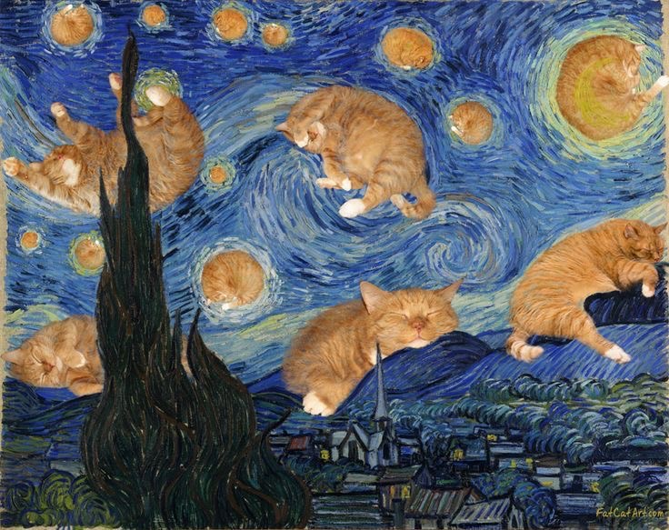
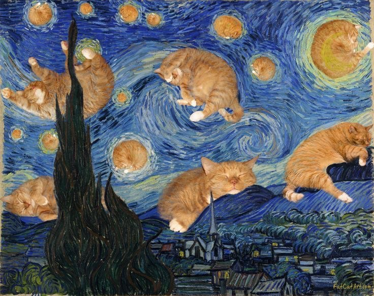
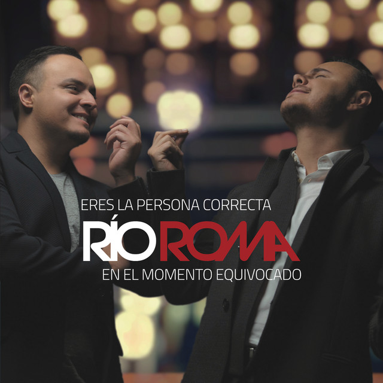
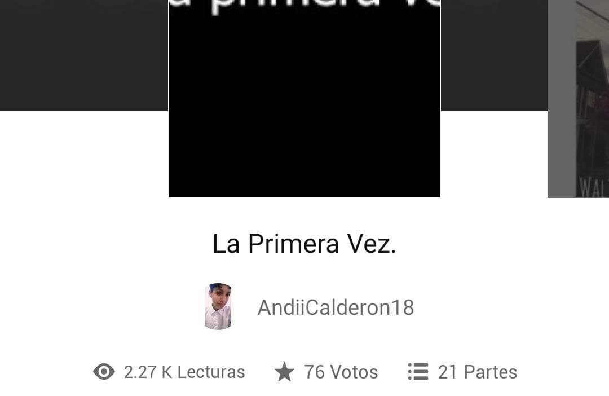

PASATIEMPOS Y GUSTOS
Entre tantas cosas que me gustan, aquí les comparto lo que más me gusta:
- Mi amor por los gatos empezo desde temprana edad, a pesar de que un gato me ataco en el baño de mi casa, y accidentalmente la puerta se cerro,a medida que ibamos teniendo un gato diferente me di cuenta de lo bonitos tiernos y amigables que son cuando uno sabe atenderlos como se merecen, tanto fue mi amor por ellos que llegue a tener 8 gatos conmigo e inclusive llegue a hacerme dos tattos referente a ellos.
 

- Mi gusto musical es ampliamente variado pues me atraen las canciones que contienen una letra bonita y triste, en algunos casos feliz, debido a circunstancias de la vida. Los generos que mas frecuento son baladas, pop romantico, y pop en inglés. Mis artistas favoritos son Río Roma.

Río Roma
Río Roma
- Como ya se mencionó la literatura me gusta mucho, para ser más especificos: la lectura física y online, la escritura en especial la manoescrita, los cuentos, oratoria,denotacion , la redacción, el teatro y sobre todo la poesía y escritura. Poseo poemas desde el 2016 ultimo guardado, y tengo un escrito en la plataforma wattpad que posee más 2k visitas.

- Los deportes mas alla de los típicos me interesan, me gusta mucho el ajedrez ,la natación, el atletismo y sus implicantes, tenis, ciclismo, patinaje, skate.
- La atracción por la tecnología no podía faltar, por los articulos científicos, y los avances tecnológicos que se dan día a día, el hecho de poder admirar lo que el hombre es capaz de lograr. En este punto eh frecuentado mucho los juegos en línea, ahora conocido como e-sports.